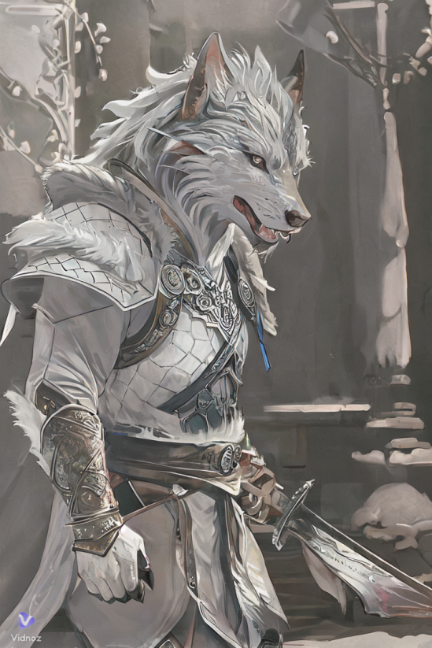
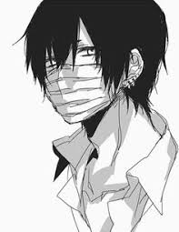
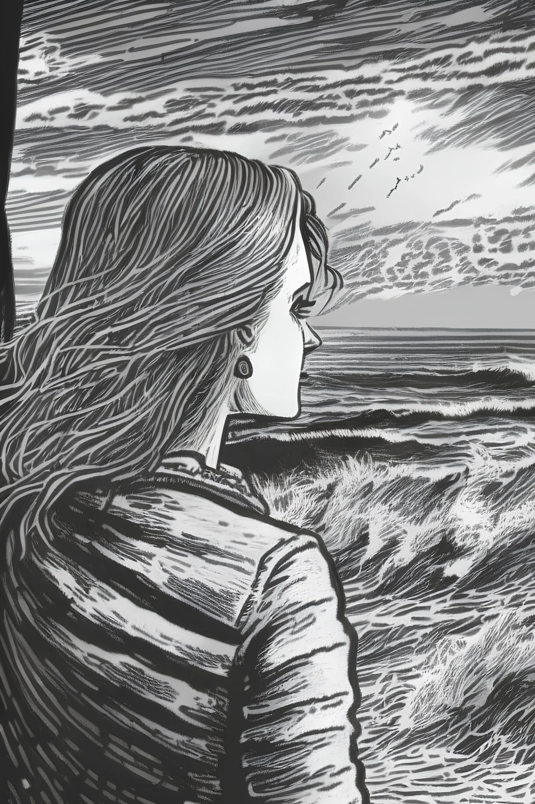
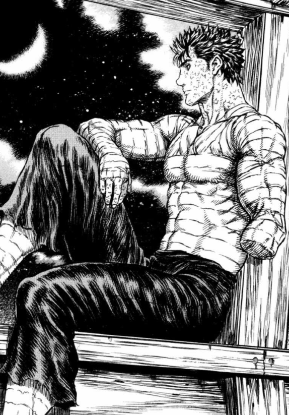

-
-

CORENTIN
Changer de voie professionnelle afin de pouvoir poursuivre une carrière dans le domaine du développement Web. Avec ce premier projet, je commence ma reconversion et j’y vais à fond.
-

ANNE
En formation développeur web depuis 3 semaines, voici notre premier challenge! Pouvoir se lancer des défis... pour changer de vie professionnelle!
-

AHMED
Aspirant développeur, animé par une soif insatiable d’apprentissage.... Taskia marque mon premier projet d’équipe, une aventure où code et collaboration se rencontrent pour donner vie à une idée.